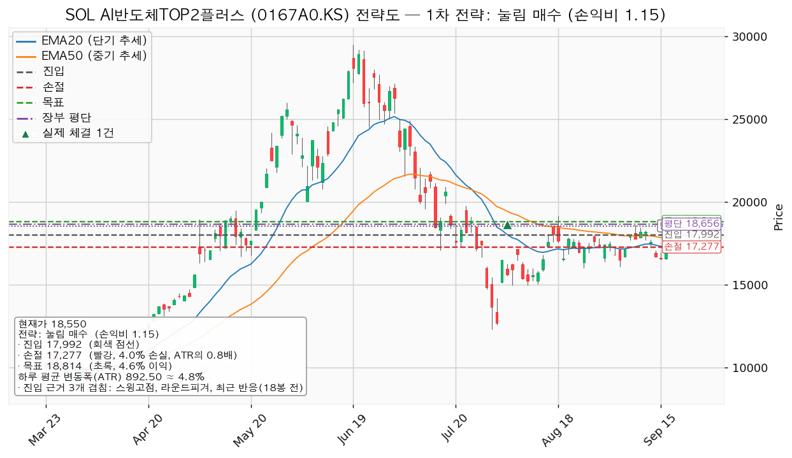
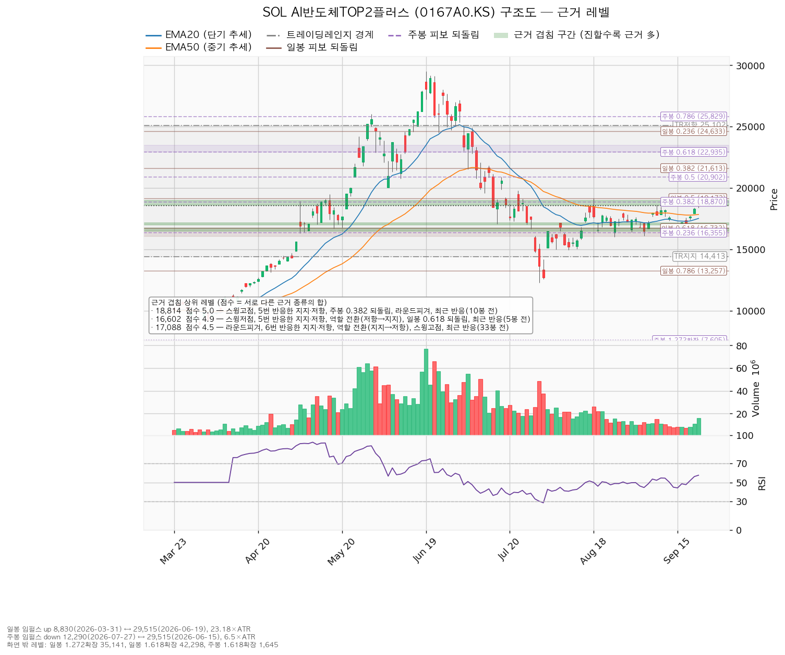
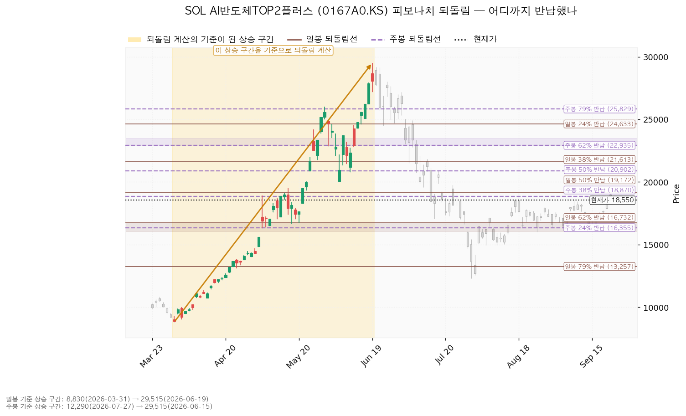
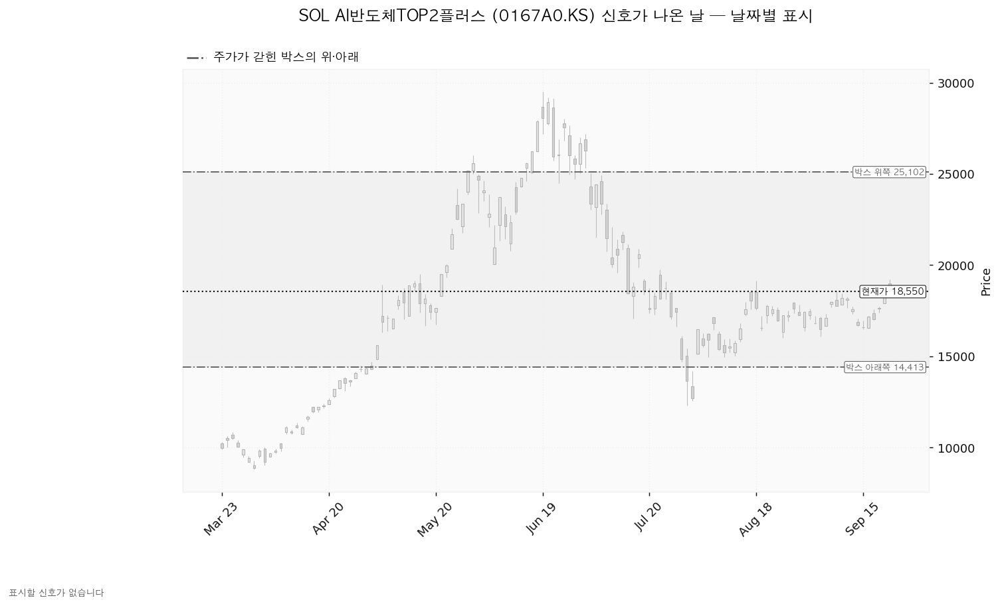

SOL AI반도체TOP2플러스(0167A0.KS)는 삼성전자와 SK하이닉스 두 종목에 집중 투자하는 한국 상장 ETF이며, 개별 기업이 아니라 바스켓입니다.
| 구분 | 가격 | 판정 방식 | 현재가 대비 | 상태 |
|---|---|---|---|---|
| 진입선(되돌림 매수 조건) | 17,990원 | 일봉 저가가 닿으면 분할 매수 — 종가 회복을 기다리는 선이 아니라 내려오기를 기다리는 선입니다 | -3.02% (0.63 ATR) | 대기 |
| 집행 손절 | 17,275원 | 저가 도달 — 17,990원에 진입한 경우에만 유효 | -6.87% (1.43 ATR) | — |
| 관망 종료 기준 | 17,000원 | 일봉 종가 이탈(겹침 구간 17,000~17,140원의 하단) → 매수 계획 종료, 새 리포트 대기 · 보유분 유지 | -8.36% (1.74 ATR) | 유지 중 |
| 확인선 | 19,290원 | 일봉 종가 돌파 후 되돌림 지지 확인 → 새 셋업으로 재설정 | +3.99% (0.83 ATR) | 미돌파 |
| 폐기선(구조) | 14,410원 | 이탈 후 3거래일 내 회복 실패 + 반등에서 저항으로 확인 | -22.32% (4.64 ATR) | 유지 중 — 실무상 작동하지 않음 |
① 직전 트리거의 성적표. 회복선 17,926원은 9/21 종가 18,320원으로 충족됐습니다. 직전 리포트는 패스 결론이었으므로 이 충족은 매수 신호가 아니라 재분석 사유였고, 그 재분석이 이 리포트입니다. 목표 18,668원도 9/22에 충족됐습니다 — 당일 고가 19,210원이고 시가 19,005원이 이미 목표 위에서 열려 체결가는 19,005원으로 잡힙니다. 직전 리포트가 달아 둔 예외("그날 종가가 18,585원 위로 마감하면 청산하지 않고 보유 유지")는 종가 18,550원으로 충족되지 않아 청산 조건이 그대로 살아 있습니다. 확인선 18,585원은 미돌파(종가 -0.19% 아래), 관망 종료 17,122원·보유분 정리선 16,500원·폐기선 14,413원은 모두 미충족입니다. 계획과 집행이 벌어져 있습니다. 장부에는 2026-08-03 매수 200주만 있고 매도 기록이 없습니다. 직전 계획대로였다면 9/22 시가 19,005원에 200주가 정리돼 평단 18,656원 대비 +1.87%(+69,800원)로 끝났을 자리입니다. 현재가 18,550원 기준으로 집행하지 않은 차이는 -91,000원입니다.
② 좌표의 이동
| 항목 | 직전(9/18) | 이번(9/22) | 왜 움직였나 |
|---|---|---|---|
| 현재가 | 17,665원 | 18,550원 | +5.01% |
| 박스 | 14,413~18,585원 (40봉) | 14,410~25,102원 (90봉) | 40봉 창이 방향성 편향 0.711로 유효 판정을 잃었고, 90봉 창(머문 비율 0.822·편향 0.555)이 대신 선택됐습니다 |
| 박스 안쪽 판정 | 중립 | 매집 우위 | 창이 바뀌며 관측치가 다시 계산됐습니다. 상승봉 대 하락봉 거래량비가 0.76에서 0.90으로 올라왔고 지지 테스트 거래량 감소·저점 절상은 그대로입니다 |
| 대표 셋업 | 회복 매수 17,926 / 16,774 / 18,668 | 눌림 매수 17,990 / 17,275 / 18,815 | 가격이 직전 회복선 위로 올라와 저항 회복을 기다리는 셋업이 성립하지 않게 됐고, 되돌림을 기다리는 셋업으로 바뀌었습니다 |
| 손익비 | 1:0.64 | 1:1.15 | 손절 폭이 1.27 ATR에서 0.80 ATR로 좁아졌습니다 |
| 확인선 | 18,585원 | 19,290원 | 직전 확인선을 종가로는 아직 못 넘었지만, 겹침 점수가 더 두꺼운 위쪽 구간(19,160~19,500원, 4.5점)으로 갱신됐습니다 |
| 폐기선 | 14,413원 | 14,410원 | 같습니다. 거리만 3.59 ATR에서 4.64 ATR로 멀어졌습니다 |
③ 판단이 바뀌었습니다. 직전은 패스였고 이번은 조건 대기입니다. 손익비가 0.64에서 1.15로 1을 넘긴 것이 바뀐 이유이며, 그 차이는 목표가 아니라 손절에서 나왔습니다 — 눌림 매수는 진입 자체가 지지 구간이라 손절을 0.80 ATR 안에 둘 수 있습니다. 직전 리포트에 정정할 오류는 없습니다.
| 항목 | 내용 |
|---|---|
| 이름 | 눌림 매수 — 롱(매수) |
| 구조 증명도 | 선취형(구조 미확인) — 구조가 증명되기 전에 되돌림에서 먼저 잡습니다. 진입가는 유리하나 실패 확률이 높습니다 |
| 진입 | 17,990원 (현재가 -3.02%, 0.63 ATR 아래) |
| 진입 근거 겹침 | 3개 겹침, 2.3점 — 스윙고점, 라운드피겨, 최근 반응(18봉 전). 구간 17,985~18,000원 |
| 손절 | 17,275원 (진입 대비 -3.97%, 0.80 ATR) |
| 손절 근거 | 근거 겹침 구간(17,500~17,836원, 2.1점 — EMA20·EMA50·라운드피겨) 바로 아래로 밀어낸 자리입니다. 구간 안쪽에 두지 않았으므로 이 손절이 곧 구조적 손절이며, 별도의 구조적 손절 기준 손익비가 따로 산출되지 않았습니다 |
| 목표 | 18,815원 (진입 대비 +4.59%, 0.92 ATR) |
| 목표 근거 겹침 | 5개 겹침, 5.0점 — 스윙고점, 5번 반응한 지지·저항, 주봉 0.382 되돌림, 라운드피겨, 최근 반응(10봉 전). 구간 18,610~19,000원 |
| 손익비 | 1:1.15 (손절 폭 0.80 ATR) |
| 엣지 학파 | 평균회귀 — "지지로 눌릴 때 산다, 되돌림이 멈추는 자리를 노린다"는 전제 |
| 엣지 성격 | 승률이 높고 이익 폭이 작은 유형이며, 저항에서 전량 청산하는 것이 이 전제와 맞습니다(유형에 대한 일반적 설명이고 이 리포트에서 승률을 측정한 것은 아닙니다) |
| 판정 | 조건 대기 — 17,990원까지 내려오면 집행 |
대표로 고른 이유: 손익비 1.15 × 구조 증명도(선취형) × 근거 겹침 2.3점으로 선정됐고, 지수 대비 20일 초과수익 +3.22% 때문에 순위에 1.032배가 곱해졌습니다. 이 배수가 없었어도 순위는 바뀌지 않습니다. 함께 산출된 다른 셋업은 보류입니다. 돌파 매수(진입 18,815원 / 손절 17,762원 / 목표 19,290원)는 손익비 1:0.45로 비매력 판정이라 집행하지 않습니다. 진입 근거 겹침은 5.0점으로 더 두껍고 구조 증명도도 돌파 확인형으로 더 높지만, 목표까지의 거리가 손절 폭의 절반도 되지 않습니다. 손익비 1등과 대표 셋업이 갈리는 상황은 아닙니다. 집행 정책: 손절은 17,275원 하나뿐이고 청산은 18,815원 전량이며 트레일링은 걸지 않습니다. 진입~목표 거리가 825원 = 0.92 ATR로 하루 변동폭의 2배에 못 미치므로 다단 청산을 권하지 않습니다(이 2배 기준은 관행이지 정설이 아닙니다). 중간 레벨이 없어 분할 없이 단일 목표이고 전 구간 손익비도 1.15로 같으며, 본전 스탑 단계가 없어 하한 손익비는 산출되지 않았습니다. 진입 근거와 청산 규칙이 둘 다 평균회귀 쪽이라 서로 어긋나지 않습니다. 확인선 19,290원보다 목표 18,815원이 먼저이므로 18,815원에서 전량 청산하고, 그 뒤 일봉 종가로 19,290원을 넘으면 상승 확정으로 보고 그때 새 셋업을 잡습니다. 박스 상단 25,102원은 그 위 맥락으로만 둡니다. 현재가 추격 여부: 추격 비권장입니다. 현재가 18,550원이 목표 18,815원 바로 아래라 지금 사면 벌 수 있는 폭이 +1.43%밖에 남지 않습니다. 대기 좌표는 진입 후보 17,990원이고, 이동평균은 5봉 뒤 EMA20이 17,518원 → 17,924원, EMA50이 17,836원 → 17,966원에 놓입니다. 이 투영치는 현재가 18,550원이 5봉 동안 유지될 경우의 이평선 위치이지 가격 예측이 아닙니다. 진입 계획가 17,990원은 장부 평단 18,656원보다 666원 아래이므로, 집행되면 평단을 낮추는 매수가 됩니다.

| 단계 | 트리거 | 의미 | 행동 |
|---|---|---|---|
| ① 관찰 | 일봉 종가가 17,990원 아래로 마감 | 구조 이탈 시작 — 되돌아 올라오면 속임수 하락일 수 있어 아직 무효가 아닙니다 | 추가 매수만 중단. 집행 손절은 그대로 둡니다 |
| ② 경고 | 이탈 후 3거래일 안에 17,990원을 종가로 회복하지 못함, 또는 그 전에 일봉 종가가 17,100원 아래로 마감(하루 평균 변동폭의 1배만큼 더 밀림) — 둘 중 먼저 오는 쪽 | 되돌림 지지 상실 가능성이 우세해짐 | 잔여 비중 축소. 반등이 나오면 이 가격에서의 반응을 확인합니다 |
| ③ 무효 | 반등이 17,990원에서 막히고 그 아래로 되밀림(지지가 저항으로 전환) | 셋업 폐기 — 구조 해석이 틀린 것으로 확정 | 포지션 정리 후 새 구조가 만들어질 때까지 관망 |
위 3단계는 진입한 경우에 한해 적용되며 판정 기준선은 17,990원입니다. 집행 손절 17,275원은 이 판정과 무관하게 별도로 작동하며, 장중 일시 이탈은 어느 단계에도 해당하지 않습니다. 논지 무효화: 폐기선 14,410원은 현재가에서 하루 변동폭의 4.64배 아래로 3배를 넘어섭니다. 실무상 무효화 기준으로 작동하지 않습니다. 미진입자가 실제로 볼 선은 관망 종료 기준 17,000원이고 보유분은 16,500원에서 정리됩니다. 가격과 별개로 이 판단을 접는 조건은 10월 말 기초 자산 실적입니다 — 2026-10-27 SK하이닉스의 내년 EPS 추정 472,527원, 2026-10-28 삼성전자의 내년 EPS 추정 70,496원이 기준선이며, 실적과 가이던스 이후 이 값들이 하향으로 돌아서면 아래 컨센서스 절의 배수 수축 판정을 접습니다.
① 상승 전환 — 18,815원을 종가로 회복해 지지되고 이어서 19,290원을 종가로 돌파하는 경로입니다. 구조로는 속임수 하락 확인 → 강세 신호 → 되돌림 지지 확인 → 상승 국면입니다. 행동은 정해져 있습니다: 보유 200주는 18,815원에서 전량 청산하고, 19,290원 종가 돌파가 확인되면 그 시점에 셋업을 새로 산출합니다. 돌파 이후 구간은 이 포지션의 연장이 아닙니다.
② 횡보 지속 — 14,410원을 지키면서 19,290원 아래에서 박스가 유지되는 경로입니다. 구조는 유지되며 매물 소화에 시간이 필요한 국면이고, 부정적 신호가 아닙니다. 17,990원까지 내려오면 계획대로 매수합니다. 추적할 관측치는 셋입니다 — ⑴ 지지 테스트마다 매도 거래량이 계속 줄어드는지(현재 1.54 → 0.85 → 0.68배로 감소 중), ⑵ 저점이 계속 절상되는지(현재 12,290 → 14,950 → 16,000원으로 절상 중), ⑶ 상승할 때 거래량이 확대되는지(현재 상승봉 대 하락봉 거래량비 0.90으로 1 미만). 세 번째가 1을 넘으면 박스 안쪽 근거가 더 두꺼워집니다.
③ 시나리오 폐기 — 14,410원 이탈 후 3거래일 내 종가 회복 실패(또는 그 전에 종가가 13,521원 아래로 마감), 그 뒤 반등이 14,410원에서 막히는 경로입니다. 매집이 아니라 재분산이었다는 뜻이며 추가 저점 갱신 가능성을 엽니다. 행동은 보유분 정리 후 새 매도 절정과 새 박스가 만들어질 때까지 관망이며, 실제로는 그 전에 16,500원이 먼저 작동합니다.
| 가격 | 점수 | 근거 | 현재가 대비 |
|---|---|---|---|
| 18,815원 (18,610~19,000) | 5.0 | 스윙고점, 5번 반응한 지지·저항, 주봉 0.382 되돌림, 라운드피겨, 최근 반응(10봉 전) | +1.43% |
| 19,290원 (19,160~19,500) | 4.5 | 스윙고점, 일봉 0.5 되돌림, 4번 반응한 지지·저항, 라운드피겨, 최근 반응(25봉 전) | +3.99% |
| 17,990원 (17,985~18,000) | 2.3 | 스윙고점, 라운드피겨, 최근 반응(18봉 전) | -3.02% |
| 17,618원 (17,500~17,836) | 2.1 | 라운드피겨, EMA20, EMA50, 최근 반응(18봉 전) | -5.02% |
| 17,088원 (17,000~17,140) | 4.5 | 라운드피겨, 6번 반응한 지지·저항, 역할 전환(지지→저항), 스윙고점, 최근 반응(33봉 전) | -7.88% |
| 16,602원 (16,495~16,732) | 4.9 | 스윙저점, 5번 반응한 지지·저항, 역할 전환(저항→지지), 일봉 0.618 되돌림, 최근 반응(5봉 전) | -10.50% |
진입 17,990원이 2.3점 구간이고 손절은 그 아래 2.1점 구간까지 통째로 피해 내려놓은 자리입니다. 두 구간 사이가 좁아 손절 폭이 0.80 ATR로 나왔고, 손익비가 1을 넘긴 것은 이 근접성 덕입니다. 아래쪽에서 가장 두꺼운 구간은 16,495~16,732원(4.9점)이고 보유분 정리선 16,500원이 그 하단입니다. 박스: 조회된 일봉은 130개이고 40봉·90봉 두 창을 시험했습니다. 40봉 창은 폭이 3.26 ATR로 좁지만 방향성 편향 0.711로 유효 판정을 받지 못했고, 90봉 창(14,410~25,102원, 머문 비율 0.822, 편향 0.555, 폭 11.98 ATR)이 선택됐습니다. 즉 최근 넉 달 남짓의 구간을 본 것이며, 폭이 하루 변동폭의 12배라 박스 경계 자체는 집행 기준으로 쓰지 않고 안쪽 겹침 구간을 씁니다. 어디에서 들어왔는지: 직전 구간은 9,365~18,940원의 추세·확장 구간이었고 거기서 위로 올라와 이 박스에 들어왔습니다. 아래에서 올라온 구간은 재축적일 수도 분산일 수도 있어 모양만으로는 판정되지 않습니다. 박스 안쪽 관측치: 지지 테스트는 7/29 저가 12,290원(거래량 평균의 1.54배) → 8/7 14,950원(0.85배) → 8/25 16,000원(0.68배)으로 매도 거래량이 감소했고, 저점은 절상됐습니다. 상승봉 대 하락봉 거래량비는 0.90으로 1 미만이라 이 항목만 반대쪽입니다. 종합 판정은 매집 우위이며 근거는 앞의 두 가지입니다. 직전 리포트의 중립 판정에서 바뀐 것은 박스 창이 40봉에서 90봉으로 바뀌면서 관측 구간이 달라졌기 때문입니다.

되돌림: 일봉은 8,830원(3/31) → 29,515원(6/19) 상승 구간(23.18 ATR)이 기준이고 0.5 = 19,173원 / 0.618 = 16,732원입니다. 현재가 18,550원은 그 상승분의 53%를 반납한 자리로 두 선 사이에 있습니다. 주봉은 29,515원(6/15) → 12,290원(7/27) 하락 구간(6.5 ATR)이 기준이고 0.382 = 18,870원이 목표 겹침 구간(18,610~19,000원)의 상단을 이룹니다. 일봉·주봉 모두 기준 구간이 유효하게 잡혀 되돌림선이 계산됐습니다.

날짜별 신호: 이번 박스 창에서는 산출된 신호일이 없습니다. 직전 리포트가 적은 8/18·9/8 속임수 상승은 40봉 박스의 상단 18,585원을 기준으로 잡힌 것이었는데, 박스 상단이 25,102원으로 올라가면서 그 두 날이 상단 실패로 분류되지 않게 됐습니다. 가격이 달라진 것이 아니라 기준을 잡은 구간이 달라진 것입니다.

이 종목은 ETF라 기업 재무 데이터가 제공되지 않습니다. 목표주가·배수·이익 추정치·현금흐름을 하나도 조회할 수 없었고, 따라서 이 ETF 자체에 대한 배수 비교와 목표주가 분포 대비 위치 판정은 이번에도 하지 못합니다. 이 리포트의 목표 18,815원은 밸류에이션 목표가 아니라 위쪽에서 근거가 가장 두껍게 겹치는 구조 레벨입니다. 아래는 담고 있는 두 종목의 수치입니다. (a) 배수와 성장률 — SK하이닉스(현재가 1,841,000원)는 선행 배수 3.90배, 삼성전자(현재가 277,500원)는 3.94배입니다. 두 종목 모두 후행 배수가 제공되지 않아 후행·선행 비교는 할 수 없으며, 선행 배수만으로 비싸다·싸다를 단정하지 않습니다. 내년 EPS 추정 증가율은 SK하이닉스 +33.4%, 삼성전자 +46.4%입니다. (b) 목표주가 분포 — SK하이닉스는 평균 3,184,026원 / 최저 1,535,000원 / 최고 5,300,000원, 애널리스트 37명이며 현재가는 최저 목표 위에 있습니다. 삼성전자는 평균 475,850원 / 최저 290,000원 / 최고 725,000원, 36명이며 현재가 277,500원은 애널리스트 36명 중 가장 낮은 목표 290,000원보다도 아래입니다. 두 종목 모두 추천등급은 강력매수입니다. (c) 하락의 성격과 상향의 진행 여부 — 이 ETF는 52주 고점에서 -37.15% 내려와 있는데 그 사이 담고 있는 두 종목의 이익 추정치는 올랐습니다. 추정치가 오르는 동안 가격이 내린 것이므로 배수 수축이며, 사업 악화를 가리키는 근거는 이번 데이터에 없습니다. 내년 EPS는 90일 +11.5% / 최근 30일 +2.8%(SK하이닉스), 90일 +16.5% / 최근 30일 +4.7%(삼성전자)로 둘 다 최근 30일에도 올라가고 있어 상향이 진행 중입니다. 확인 항목은 10월 말 실적이며 그때까지는 추정치가 계속 오르는지가 관찰 대상입니다. 올해분 추정은 SK하이닉스 90일 +14.8% / 30일 +0.2%, 삼성전자 90일 +4.4% / 30일 -0.8%로 최근 한 달은 멈췄습니다 — 상향의 무게가 올해에서 내년으로 옮겨 가 있습니다. (d) 현금흐름 (결산 기준일 2025-12-31) — SK하이닉스는 영업현금흐름 +53.4조원, 잉여현금흐름 +24.8조원이며 설비투자를 +71.5%(16.7조 → 28.6조원) 늘렸습니다. 삼성전자는 영업현금흐름 +85.3조원, 잉여현금흐름 +33.2조원, 설비투자 -3.0%입니다. 두 종목 모두 영업·잉여 현금흐름이 양수라 적자의 성격을 가를 상황이 아닙니다. SK하이닉스의 증설이 이익으로 돌아오는지는 10/27 확인 항목입니다. (e) 상승 여력의 분해 — 컨센서스 상승 여력은 SK하이닉스 +72.9%, 삼성전자 +71.5%입니다. 목표주가를 내년 EPS 추정으로 나눈 내재 배수가 각각 6.74배·6.75배이고 현재 선행 배수는 3.90배·3.94배입니다. 내년 이익 증가분은 이미 선행 배수 안에 들어가 있으므로, 두 목표의 상승분은 전부 배수가 3.9배에서 6.7배로 확장되는 것을 전제합니다. 섹터와 시계 — 20일 초과수익 기준 국내 반도체는 지수 대비 +5.32%로 11개 섹터 중 2위이고, 1위는 AI전력기기 +5.76%입니다. 직전 리포트 시점의 +3.29%·5위에서 올라왔습니다. 주도주 판정은 아닙니다 — 섹터는 상위로 들어왔지만 이 ETF 자체는 52주 고점 대비 -37.15%이고 상대강도선도 60일 신고가가 아닙니다. 지수 대비 초과수익은 20일 +3.22% / 60일 -12.25% / 120일 +63.69%이며 가중치(20일 0.45 · 60일 0.30 · 120일 0.25)를 적용한 가중 초과수익은 +13.69%입니다. 위 컨센서스는 12개월, 이 리포트의 셋업은 수 주로 층위가 다르므로 결론이 갈려도 모순이 아니며, 답은 진입·손절·목표로 냅니다.
| 날짜 | 이벤트 | 볼 것 |
|---|---|---|
| 2026-09-24 | 주간 신규 실업수당 청구 | 고용 둔화 속도 |
| 2026-10-27 | SK하이닉스 실적 | 내년 EPS 추정 472,527원의 유지 여부, 설비투자 +71.5%의 회수 속도 |
| 2026-10-28 | 삼성전자 실적 | 내년 EPS 추정 70,496원의 유지 여부 |
ETF 자체에는 실적 발표일이 없어 담고 있는 두 종목의 실적일로 겁니다. 그 이후 2~3개 분기의 이미 알려진 역풍은 확인할 자료가 없습니다 — 컨센서스 수치로 추론해 적지 않습니다. 임박한 매크로 일정은 조회 시점 기준 5일 안에 9/24 실업수당 청구 하나만 잡혔습니다.
| 항목 | 값 |
|---|---|
| 1회 매매 손실 한도 | 계좌 평가액 139,498,400원의 1.0% = 1,394,984원 |
| 손절 폭 | 진입 대비 -3.97%(715원, 0.80 ATR) |
| 계산상 포지션 크기 | 1,951주 = 35,098,968원 = 계좌의 25.2% |
| 적용 한도 | 계좌의 13% = 18,134,792원 = 1,008주 — 한 종목에 13%를 넘게 싣지 않으므로 제한합니다. 이때 실제 감수 손실은 720,720원 = 계좌의 0.52%입니다 |
보유 200주 3,710,000원(계좌의 2.66%)을 그대로 들고 있다면 신규 매수는 801주(14,424,792원)까지입니다. 반도체 테마 합계는 현재 계좌의 13.14%이고 한도가 35%라 이번 매수로는 걸리지 않습니다. 도구 적합성: 하루 평균 변동폭이 주가의 4.81%로 8% 기준 아래에 있습니다. 다만 손절 폭 0.80 ATR은 하루 평균 변동폭보다 좁아, 논지가 맞아도 하루치 등락만으로 체결될 수 있습니다. 위 13% 한도에서 실제 감수 손실이 계좌의 0.52%에 그치는 것이 이 좁은 손절에 대한 대응이며, 더 넓은 손절을 원하면 이 셋업이 아니라 17,000원 아래에서 새 리포트를 기다리는 쪽이 맞습니다.
최종 판정: 신규 매수는 17,990원 도달 시 집행, 손절 17,275원, 목표 18,815원 전량 청산, 손익비 1:1.15(손절 폭 0.80 ATR). 현재가 18,550원에서의 추격은 권하지 않습니다. 보유 200주는 18,815원에 전량 청산하고 16,500원 일봉 종가 이탈 시 전량 정리합니다. 조건 점검 8항목 중 4개 통과이며 미달은 이동평균 정배열·52주 고점 대비·상대강도선 신고가·거래량 강도입니다 — 이 넷이 다음에 볼 것이고, 특히 눌림 구간에서 5일 거래량이 20일 평균의 0.7배 아래로 마르는지가 진입 직전의 확인 항목입니다.
ATR은 하루에 평균 얼마나 움직였는지를 원 단위로 잰 값(892원)이며, 레벨까지의 거리를 "평범한 하루 등락의 몇 배인지"로 환산하는 데 씁니다. EMA는 최근 가격에 가중치를 더 준 평균선으로 추세 방향을 봅니다. EPS는 주당순이익입니다. '선반'은 가격이 실제로 여러 번 되돌아선 수평 가격대이고, '겹침 점수'는 서로 다른 종류의 근거가 같은 가격대에 몇 개나 모였는지를 점수로 환산한 값입니다.
이 리포트는 투자 자문이 아니며, 최종 판단과 책임은 투자자 본인에게 있습니다.